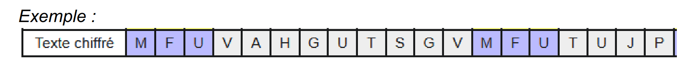
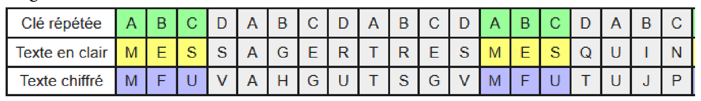
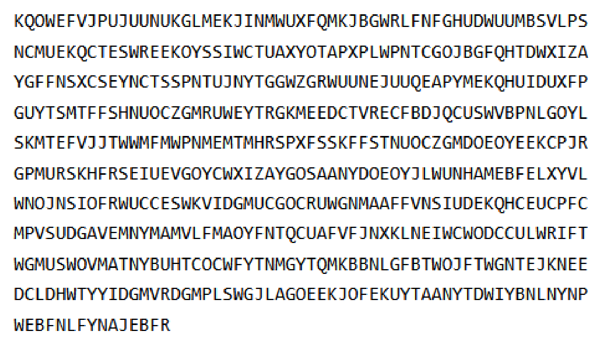
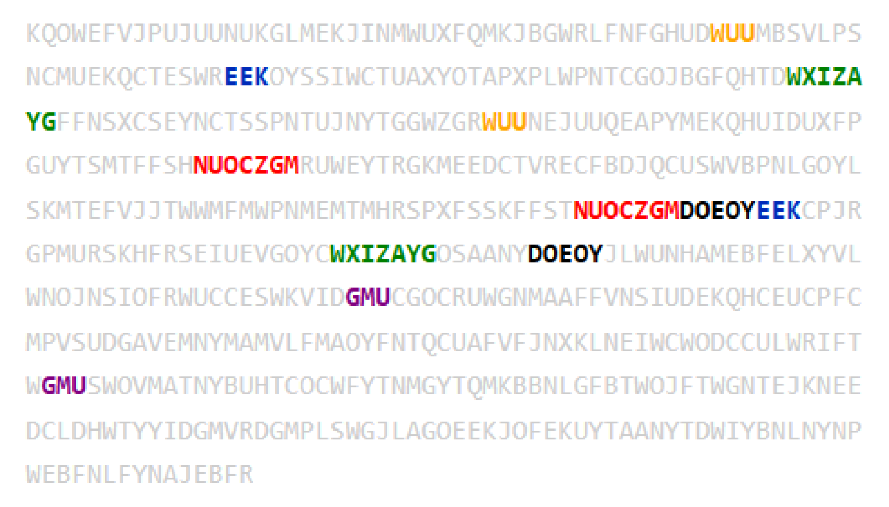
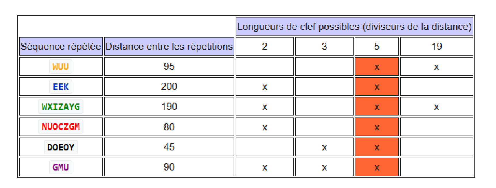
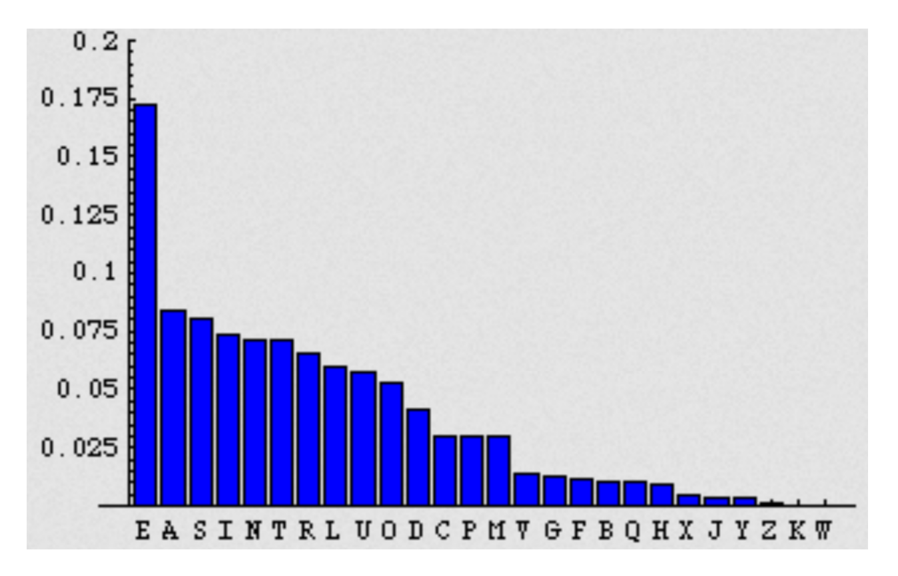

Blaise de Vigenère est un diplomate et cryptographe français né le 5 avril 1523 et mort presque 73 ans plus tard le 19 février 1596. Il décrit en 1586 un système de chiffrement dans son ouvrage intitulé Traité des Chiffres . Ce n’est pourtant pas le premier à décrire un système similaire, puisque cet honneur revient au cryptographe italien Giovan Battista Bellaso qui en parle 33 ans plus tôt en 1553.
Mais c’est quoi au juste le chiffrement de Vigenère ?
Il s’agit d’un “système de chiffrement par substitution polyalphabétique”
Cela signifie que le changement d’une lettre en une autre durant le codage varie en fonction de la position de celle-ci dans la phrase et la longueur de la clé. Ainsi un d peut devenir un f, un g ou un r et ce dans la même phrase et la même clé si celle ci le permet. Et c’est cette particularité qui permet à ce système de chiffrement d’être plus sécurisé qu’une clé dite “mono alphabétique" comme la célèbre clé de César qui consiste simplement en un décalage d’une lettre d’un certain nombre de places dans l’alphabet en fonction de la clé. Vigenère ou plutôt Bellaso utilise un chiffrement plus complexe et donc plus dur à décrypter, puisqu’il faudra attendre près de 277 ans avant qu’un major prussien le décode, un certain Friedrich Kasiski, qui invalide donc le système en proposant un test permettant d’estimer la longueur de la clé.
Cela signifie que le changement d’une lettre en une autre durant le codage varie en fonction de la position de celle-ci dans la phrase et la longueur de la clé. Ainsi un d peut devenir un f, un g ou un r et ce dans la même phrase et la même clé si celle ci le permet. Et c’est cette particularité qui permet à ce système de chiffrement d’être plus sécurisé qu’une clé dite “mono alphabétique" comme la célèbre clé de César qui consiste simplement en un décalage d’une lettre d’un certain nombre de places dans l’alphabet en fonction de la clé. Vigenère ou plutôt Bellaso utilise un chiffrement plus complexe et donc plus dur à décrypter, puisqu’il faudra attendre près de 277 ans avant qu’un major prussien le décode, un certain Friedrich Kasiski, qui invalide donc le système en proposant un test permettant d’estimer la longueur de la clé.
Exemples : Voici quelques exercices pour vérifier si vous avez compris :
1) “Cryptez donc ce message grâce à la clé Proust”
2) Décryptez ce message codé grâce à la clé “Hugo” :
Ilgjv ! Puiz puiz yt sayy gvlzwz ggznlk ql nklay gpyuiokuhfhhzszkas !
1) “Cryptez donc ce message grâce à la clé Proust”
2) Décryptez ce message codé grâce à la clé “Hugo” :
Ilgjv ! Puiz puiz yt sayy gvlzwz ggznlk ql nklay gpyuiokuhfhhzszkas !
Le chiffrement se fait selon le tableau suivant :

Une méthode de déchiffrage : la méthode de Kasiski
La méthode de Kasiski consiste en deux étapes :
- Premièrement, trouver la longueur de la clef
- Puis déchiffrer le message à l'aide d’une analyse fréquentielle classique
- Premièrement, trouver la longueur de la clef
- Puis déchiffrer le message à l'aide d’une analyse fréquentielle classique
Première étape : Détermination de la longueur de la clef
Elle passe par la recherche de répétitions dans le texte chiffré. On s'intéresse
notamment aux répétitions de blocs de plusieurs lettres, par exemple ici trois.

Ces séquences redondantes peuvent signifier :
- soit qu’une même suite de lettres du message initial a été codée par une même partie de la clef
- soit que deux séquences différentes du message initial codées par deux parties différentes de la clef ont par pure coïncidence donné la même suite de lettre dans le message chiffré (peu probable).
- soit qu’une même suite de lettres du message initial a été codée par une même partie de la clef
- soit que deux séquences différentes du message initial codées par deux parties différentes de la clef ont par pure coïncidence donné la même suite de lettre dans le message chiffré (peu probable).
On va donc considérer le premier cas, le plus probable. Il nous faut maintenant
compter le nombre de lettres qui séparent deux séquences identiques, et on en
déduira que la longueur de la clef est un diviseur entier de ce nombre. On peut
affiner ce résultat en calculant les distances entre d’autres répétitions dans le
texte chiffré, et en cherchant leurs diviseurs : la longueur de la clef sera donc
obligatoirement un diviseur commun à toutes ces distances. Généralement, il
ne reste que peu de possibilités : il ne sera pas très long de toutes les tester.
Remarque : Cette méthode fonctionne mieux si le texte est plutôt long, et si la
clef est courte par rapport au texte.
Dans l’exemple précédent, 12 lettres séparent les deux “MFU”, la clef est donc longue de 12, 6, 4, 3 ou 2 lettres

Dans l’exemple précédent, 12 lettres séparent les deux “MFU”, la clef est donc longue de 12, 6, 4, 3 ou 2 lettres
Ici, la clef faisait 4 lettres. Si on avait la suite du texte, on aurait pu réduire le
nombre de possibilités différentes sur la longueur de la clef en trouvant un ou
plusieurs autres “MFU”, ou d’autres séquences redondantes, et en cherchant un
diviseur commun aux distances entre les séquences identiques.
Exemple avec un texte plus long : Considérons le texte suivant :

Exemple avec un texte plus long : Considérons le texte suivant :
Il semble totalement aléatoire, pourtant, en observant bien, on peut repérer
quelques répétitions intéressantes, surlignées en couleur ci dessous :

On calcule les distances entre les séquences identiques et on cherche leurs
diviseurs. Les résultats sont répertoriés dans le tableau suivant :

On constate que 5 est le seul diviseur commun à toutes les distances, on en
déduit que la longueur de la clef est 5.
Deuxième étape : Déchiffrage
Une fois qu’on connait la longueur de la clef (appelons la n) , il suffit de faire
une simple analyse fréquentielle sur les lettres aux positions k modulo n. En
effet, elles seront toutes chiffrées par la même lettre dans la clef, donc par un
chiffrement de César.
Exemple : Dans le cas précédent, la longueur de la clef est n=5. On va donc faire l’analyse fréquentielle sur la 1ère lettre, la 6e, la 11e, etc... puis sur la 2e, la 7e, la 12e, etc... et ainsi de suite
Pour terminer le déchiffrement, il suffit donc de remplacer les lettres chiffrées par les “vraies” lettres grâce à l’analyse fréquentielle, et de lire le message déchiffré !
Rappel : L’analyse fréquentielle consiste à calculer les fréquences d’apparition de chacune des lettres dans un message chiffré, d’en faire un classement et de remplacer la lettre la plus fréquente dans le texte par la lettre la plus fréquente en français (ou dans le langage du message d'origine), la seconde plus fréquente du texte par la seconde plus fréquente en français, ainsi de suite...

Exemple : Dans le cas précédent, la longueur de la clef est n=5. On va donc faire l’analyse fréquentielle sur la 1ère lettre, la 6e, la 11e, etc... puis sur la 2e, la 7e, la 12e, etc... et ainsi de suite
Pour terminer le déchiffrement, il suffit donc de remplacer les lettres chiffrées par les “vraies” lettres grâce à l’analyse fréquentielle, et de lire le message déchiffré !
Rappel : L’analyse fréquentielle consiste à calculer les fréquences d’apparition de chacune des lettres dans un message chiffré, d’en faire un classement et de remplacer la lettre la plus fréquente dans le texte par la lettre la plus fréquente en français (ou dans le langage du message d'origine), la seconde plus fréquente du texte par la seconde plus fréquente en français, ainsi de suite...
Conclusion
Le chiffre de Vigenère est une alternative astucieuse au chiffre de César, car il
résiste au premier abord à l’analyse fréquentielle, ce qui le rend bien plus fort
que le chiffre de César. Il n’est pourtant pas parfait : à partir du moment où la
longueur de la clef est connue, il est tout aussi vulnérable, car l’analyse de
fréquences peut s’appliquer sur les lettres chiffrées par la même lettre dans la
clef... Il existe une variante de ce chiffre, appelé chiffre de Vernam, dans lequel
on utilise une clef de la même longueur que le message, et qui, en théorie, est
incassable. Cependant, cela pose de nombreux problèmes, tels que la
transmission de la clef par exemple.
Sources
Wikipedia pour l’historique
Dcode.fr pour les exercices
Youtube vidéo sur Kasiski
Wikipedia pour les images (article wikipédia en français expliquant notamment le test de kasiski)
BNF Traité des Chiffres
Dcode.fr pour les exercices
Youtube vidéo sur Kasiski
Wikipedia pour les images (article wikipédia en français expliquant notamment le test de kasiski)
BNF Traité des Chiffres
Aurélien Urbillac, Arthur Félix et Luc Enderli, élèves au Lycée Franco-Allemand de Buc